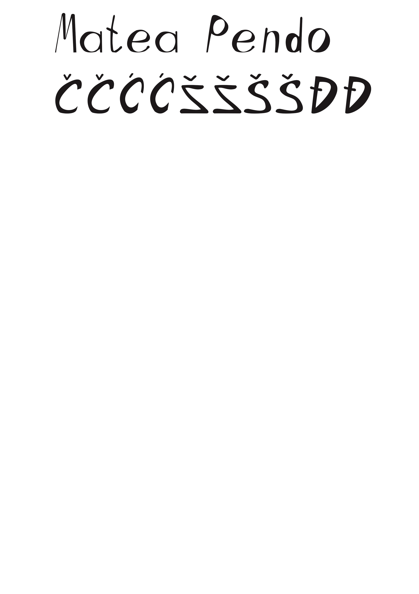
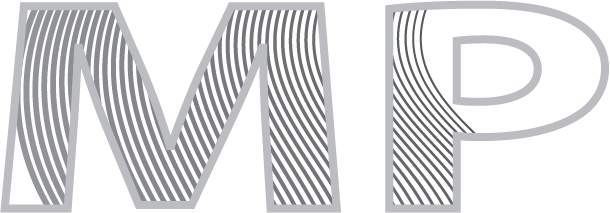

Iz vektorske grafike smo odradili 4 vježbe. Prva vježba je obuhvaćala izradu vlastitog fonta, u drugoj smo trebali preko 4 točke nacrtati Bazierovu krivulju, u trećoj smo bojali i oblikovali oblike preko slike predloška te u četvrtoj vježbi smo upotrebljavali gradijente i transparenciju.
 Nakon vježbi je uslijedio prvi projektni zadatak u kojem smo koristili sve elemente koje smo prošli kroz zadane vježbe:
Drugo poglavlje je obuhvaćalo piksel grafiku, rad u photoshopu. Odradili smo 3 vježbe odnosno 5., 6. i 7. U petoj vježbi smo morali retuširati sliku što znači popraviti sve nedostatke, uništenja na slici. U šestoj vježbi smo kolorirali sliku; preko maski i kanala dodavali boje te u sedmoj vježbi smo fotomontirali nekoliko zadanih slika.

Kad smo odradili 3 vježbe, uslijedio je opet projektni zadatak u kojem smo obuhvatili svo odrađeno gradivo za piksel grafiku.
Ovo poglavlje je obuhvaćalo osmu, devetu, desetu i jedanaestu vježbu. U osmoj i devetoj vježbi smo se fokusirali na izradu GIF-a i obradu videa, a u desetoj i jedanaestoj smo napravili web-stranicu.

Opet je uslijedio projektni zadatak kojeg trenutno radimo ;)